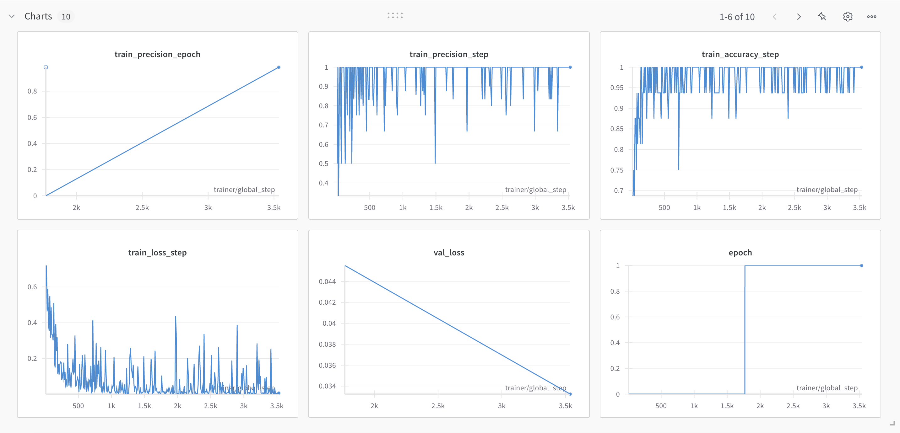
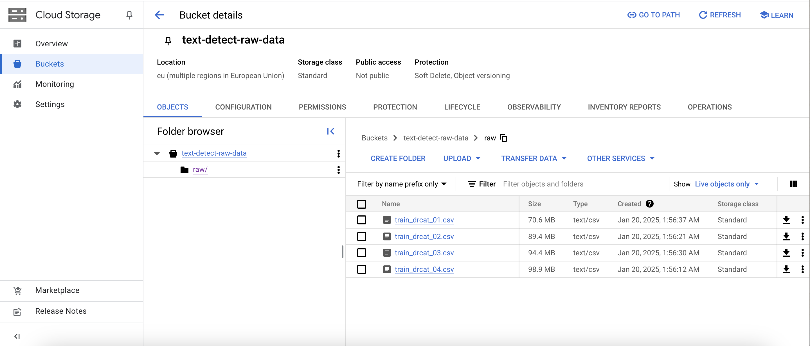
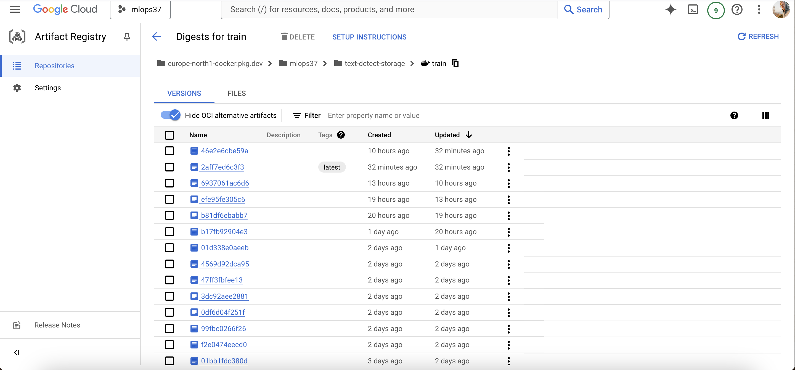
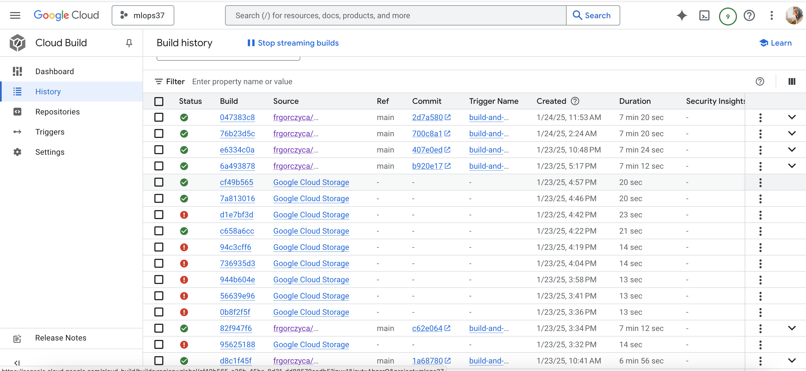
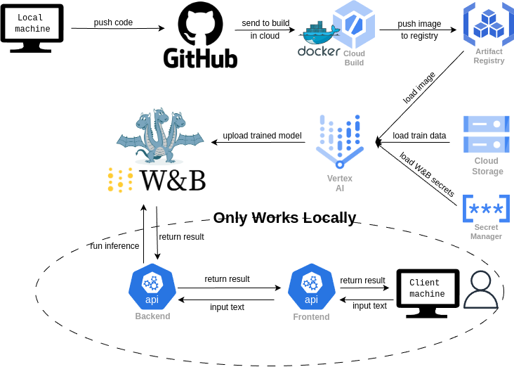

Operations
This is the report template for the exam. Please only remove the text formatted as with three dashes in front and behind like:
--- question 1 fill here ---
Where you instead should add your answers. Any other changes may have unwanted consequences when your report is
auto-generated at the end of the course. For questions where you are asked to include images, start by adding the image
to the figures subfolder (please only use .png, .jpg or .jpeg) and then add the following code in your answer:
markdown

In addition to this markdown file, we also provide the report.py script that provides two utility functions:
Running:
bash
python report.py html
Will generate a .html page of your report. After the deadline for answering this template, we will auto-scrape
everything in this reports folder and then use this utility to generate a .html page that will be your serve
as your final hand-in.
Running
bash
python report.py check
Will check your answers in this template against the constraints listed for each question e.g. is your answer too short, too long, or have you included an image when asked. For both functions to work you mustn't rename anything. The script has two dependencies that can be installed with
bash
pip install typer markdown
The checklist is exhaustive which means that it includes everything that you could do on the project included in the curriculum in this course. Therefore, we do not expect at all that you have checked all boxes at the end of the project. The parenthesis at the end indicates what module the bullet point is related to. Please be honest in your answers, we will check the repositories and the code to verify your answers.
data.py file such that it downloads whatever data you need and preprocesses it (if necessary) (M6)model.py and a training procedure to train.py and get that running (M6)requirements.txt and requirements_dev.txt file with whatever dependencies that you
are using (M2+M6)pep8) while doing the project (M7)Enter the group number you signed up on
Answer:
37
Enter the study number for each member in the group
Example:
sXXXXXX, sXXXXXX, sXXXXXX
Answer:
s214238, s233664, s183540, s233190
A requirement to the project is that you include a third-party package not covered in the course. What framework did you choose to work with and did it help you complete the project?
Recommended answer length: 100-200 words.
Example: We used the third-party framework ... in our project. We used functionality ... and functionality ... from the package to do ... and ... in our project.
Answer:
For our project, we needed a pretrained transformer for classifying essays as either human- or AI-written, and so we decided to use the open-source Transformers library from HuggingFace. Specifically we used the bert-tiny model, which is a smaller, pre-trained BERT variant. Its smaller size allowed for faster training, whilst still maintaing good performance. This allowed for faster development, by enabling us to train the model locally with GPU acceleration on a MacBook Pro M2 using Metal Performance Shaders (MPS) backend for GPU training within only a few minutes. The smaller file size also made uploading and fetching trained models from Weights and Biases faster and less demanding.
In the following section we are interested in learning more about you local development environment. This includes how you managed dependencies, the structure of your code and how you managed code quality.
Explain how you managed dependencies in your project? Explain the process a new team member would have to go through to get an exact copy of your environment.
Recommended answer length: 100-200 words
Example: We used ... for managing our dependencies. The list of dependencies was auto-generated using ... . To get a complete copy of our development environment, one would have to run the following commands
Answer:
Our project employs conda for environment management integrated with pip for package dependencies. The dependency structure is organized through requirements.txt for core dependencies and setup.py for development packages.
To copy our development environment, the following commands need to be run:
1. Environment Creation
- Create isolated conda environment: conda create --name
We expect that you initialized your project using the cookiecutter template. Explain the overall structure of your code. What did you fill out? Did you deviate from the template in some way?
Recommended answer length: 100-200 words
Example: From the cookiecutter template we have filled out the ... , ... and ... folder. We have removed the ... folder because we did not use any ... in our project. We have added an ... folder that contains ... for running our experiments.
Answer:
Using the cookiecutter template, we filled configs/ with a distributed hydra config, which allows for easy selection of config paramters before initializing a training run, and for automatic documentation of the run's config. .github/ and .dcv/ were filled with github workflow actions and dvc cloud setup respectively. Dockerfiles were moved into their own foulder to decrease clutter in the main directory. src/text_detect/ was filled with our source code, and tests/ was moved into src/, as we found it was more intuative to have the project source code and its tests share a directory. checkpoints/ and downloads/ were added in models/ to distinguish between checkpoints generated during training and models fetched from the W&B registry.
Did you implement any rules for code quality and format? What about typing and documentation? Additionally, explain with your own words why these concepts matters in larger projects.
Recommended answer length: 100-200 words.
Example: We used ... for linting and ... for formatting. We also used ... for typing and ... for documentation. These concepts are important in larger projects because ... . For example, typing ...
Answer:
We have used ruff both as precommit and as a check in the Github Actions workflow, as well as ruff fix for postcheck formatting. We also tried implementing mypy, but it proven hard to integrate as a check in the workflow, given the need to install type stubs as dependencies. It's worth noting that we have relied heavy on Visual Studio Code formatter, that in general does a good job of keeping files tidy. However it was used by team members as local precommit check. Such checks are important, as they allows for greater code consisentcy between team members who may have different approach to coding. It also ensures that stale code is removed and does not bloat the codebase.
Eventually we have found a custom action to perform precommit checks and commit changes, but it would sometime fail to commit, making it not so reliable.
In the following section we are interested in how version control was used in your project during development to corporate and increase the quality of your code.
How many tests did you implement and what are they testing in your code?
Recommended answer length: 50-100 words.
Example: In total we have implemented X tests. Primarily we are testing ... and ... as these the most critical parts of our application but also ... .
Answer:
We have implemented 3 kind of tests: unit tests, performance tests and integration tests. The unit tests tests the data and the model - the the data tests tests all the functions and class methods inside our data.py and the model test tests most of our function, excluding the ones using W&B. Our performance test had a test using locust for load testing and an accuracy test making sure our model has an accuray above 80%. Finally, the integration test is used to validate our API.
What is the total code coverage (in percentage) of your code? If your code had a code coverage of 100% (or close to), would you still trust it to be error-free? Explain you reasoning.
Recommended answer length: 100-200 words.
Example: The total code coverage of code is X%, which includes all our source code. We are far from 100% coverage of our ** code and even if we were then...*
Answer:
Next, an overview of the code coverage of tests performed is shown: - For the integration tests, specifically the API tests: 52% average coverage with 43% coverage of the wandb_functions.py, 42% of model.py, and 70% of the app.py file. - As for the unit tests, the data.py unit tests achieved 82% coverage, whereas the model unit tests achieved only 52% coverage of the model file. This is due to the fact that any functions of the model.py code which required external api calling(mostly wandb) were omitted. - Even if the tests achieved a 100% code coverage, we would not trust it to run completely bug-free. Coverage is just a representation of the number of lines of code run when the tests are executed. Nevertheless, even though thse lines are run, there might be scenarios which trigger certain parts of the tested codes, and in combination with each other, do not behave as expected.
Did your workflow include using branches and pull requests? If yes, explain how. If not, explain how branches and pull requests can help improve version control.
Recommended answer length: 100-200 words.
Example: We made use of both branches and PRs in our project. In our group, each member had an branch that they worked on in addition to the main branch. To merge code we ...
Answer:
We made use of branches to segregate development of different features amongst group members, and PRs to protect our main branch by implementing merge checks, enabling us to always have a working version of our project. Our branches were at times chaotic, as multiple group members could be working on multiple branches for different features, and sometimes branches were abandoned without being properly deleted, either locally or remotely. However this never caused any issues in development or for our workflows, as group members always had a good overview of the features they were in charge of developing, which could then be merged via a PR upon completion. Many group members felt they got better at understanding and working with git as part of a larger project.
Did you use DVC for managing data in your project? If yes, then how did it improve your project to have version control of your data. If no, explain a case where it would be beneficial to have version control of your data.
Recommended answer length: 100-200 words.
Example: We did make use of DVC in the following way: ... . In the end it helped us in ... for controlling ... part of our pipeline
Answer:
We have used DVC but it was not integral part of our data management. Since we used a dataset from kaggle, and never modified it, we were able to pull it on demand using a script executable as an python invoke task. We made no changes to our dataset, which made version control little reduntant in our specific case.
We do however see the advantage of using DVC in projects where data sets change constantly, making sure it's consistent across environments and that potentiall errors. Google Cloud integration of DVC also makes it easier for services to access datasets, so storing version controlled files there makes setting up training much easier.
Discuss your continuous integration setup. What kind of continuous integration are you running (unit testing, linting, etc.)? Do you test multiple operating systems, Python versions etc. Do you make use of caching? Feel free to insert a link to one of your GitHub actions workflow.
Recommended answer length: 200-300 words.
Example: We have organized our continuous integration into 3 separate files: one for doing ..., one for running ... testing and one for running ... . In particular for our ..., we used ... .An example of a triggered workflow can be seen here:
Answer:
Our continuous integration involves: - Run ruff checks: To make sure coding standards are consistent across contributions - Run pre-commit checks and commit pre-commit fixes: Similar purpose to the one above - Setup python environment and run unit tests: tested on unix and macOS environment with python 3.11 and python 3.12. Testing on windows was scrapped for most of the development process since it was quite slow and wasn't deemed that crucial (containers are rarely based on that OS) - Setup python environment and run API integrations tests: While could be combined with unit test for environment setup, we have decided to split those since they are a vastly different part of the application - Stage W&B model: Identify latest model, run performance tests and tag it for production - Vertex AI pipeline: Can only be triggered manually, creates a custom job to train in the cloud - Build docker (cloudbuild): Triggers on main merge, build a docker container and uploads it to the Artifact Registry
Example workflow for integration tests can be found here
In the following section we are interested in learning more about the experimental setup for running your code and especially the reproducibility of your experiments.
How did you configure experiments? Did you make use of config files? Explain with coding examples of how you would run a experiment.
Recommended answer length: 50-100 words.
Example: We used a simple argparser, that worked in the following way: Python my_script.py --lr 1e-3 --batch_size 25
Answer:
We used hydra for managing the configuration of our model training. This consists of a primary config file, that holds top-level config such as the global seed, and further points to subconfigs for our data, model, optimizer and training hyperparamters, encompassing all variables of our experiment. To run an experiment, execute either python src/text_detect/train.py or run invoke train from the root.
Reproducibility of experiments is important. Related to the last question, how did you secure that no information is lost when running experiments and that your experiments are reproducible?
Recommended answer length: 100-200 words.
Example: We made use of config files. Whenever an experiment is run the following happens: ... . To reproduce an experiment one would have to do ...
Answer:
As mentioned in the previous question (12), we made use of config files. When a run is executed, hydra automatically logs the used config, but it is also saved in the W&B artifact metadata so it can be retrieved when the model is downloaded from the registry. This ensures that each saved model contains all the information needed to reproduce its experiment. To reproduce an experiment, the model simply needs to be downloaded locally from the W&B registry, and its config can be retrieved as part of its run config metadata. The metadata can also be viewed on the W&B teams or registry.
Upload 1 to 3 screenshots that show the experiments that you have done in W&B (or another experiment tracking service of your choice). This may include loss graphs, logged images, hyperparameter sweeps etc. You can take inspiration from this figure. Explain what metrics you are tracking and why they are important.
Recommended answer length: 200-300 words + 1 to 3 screenshots.
Example: As seen in the first image when have tracked ... and ... which both inform us about ... in our experiments. As seen in the second image we are also tracking ... and ...
Answer:

In the image, we can see 6 tracked metrics, although 10 charts are present, but limited by the page. Both loss, accuracy and precision are tracked. For training, the metrics are tracked both for each training step, and on each epoch, but for validation they are tracked only per epoch. These metrics provide crucial insights into model performance and training dynamics. Loss helps monitor how well the model is learning by measuring prediction errors, with lower values indicating better fit. Accuracy shows the overall correctness of predictions, while precision focuses on the reliability of positive predictions by measuring the ratio of true positives to all positive predictions. Tracking metrics at both step and epoch levels allows us to observe both fine-grained learning behavior and overall trends. Training metrics reveal how the model learns from the training data, while validation metrics indicate generalization ability on unseen data. Additional metrics such as recall (measuring the model's ability to find all positive cases), F1 score (balancing precision and recall), and AUROC (measuring discrimination ability across different thresholds) could be enabled via the config, however they quickly clutter the overview of charts. Focusing on key metrics helps maintain clarity and efficiency in the analysis process.Docker is an important tool for creating containerized applications. Explain how you used docker in your experiments/project? Include how you would run your docker images and include a link to one of your docker files.
Recommended answer length: 100-200 words.
Example: For our project we developed several images: one for training, inference and deployment. For example to run the training docker image:
docker run trainer:latest lr=1e-3 batch_size=64. Link to docker file:Answer:
We have used docker images in two cases:
- Training image used by Vertex AI for training. This image is build on successful merge to main branch and uploaded to Artifact Registry. Can also be used to train model locally. Dockerfile can be found in here.
- Image generated using bentoml contenerize that is used to deploy API to the cloud using Cloud Run. Bento ML file used to generate the image can be found here
When running into bugs while trying to run your experiments, how did you perform debugging? Additionally, did you try to profile your code or do you think it is already perfect?
Recommended answer length: 100-200 words.
Example: Debugging method was dependent on group member. Some just used ... and others used ... . We did a single profiling run of our main code at some point that showed ...
Answer:
We have used Visual Studio Code debugger quite extensively for debugging python code both for loggin variables and for breakpoints. This was very usefull in the initially stages (when coding was still a large part of the project) and while writing unit tests (both to spot bugs in the code we have not noticed before or to fine tune the tests). We have not used any profiling.
In the following section we would like to know more about your experience when developing in the cloud.
List all the GCP services that you made use of in your project and shortly explain what each service does?
Recommended answer length: 50-200 words.
Example: We used the following two services: Engine and Bucket. Engine is used for... and Bucket is used for...
Answer:
We have used: - Cloud Storage - For storing datasets - Artifact Registry - For storing build Docker images - Cloud Build - For building docker images - Vertex AI - For setting up training in the cloud - Secret Manager - For storing W&B secrets - IAM & Admin - Managing service account permission to resources - Cloud Run - For deploying API - Compute Engine - for training on vm in the cloud with manual setup
The backbone of GCP is the Compute engine. Explained how you made use of this service and what type of VMs you used?
Recommended answer length: 100-200 words.
Example: We used the compute engine to run our ... . We used instances with the following hardware: ... and we started the using a custom container: ...
Answer:
We have not used Compute Engine that much other than sporadic running of train.py with a manual setup meaning: cloning the repository manually, running setup tasks (installing requirements etc.) and running the code manually. We found it to be tedious task and since our model is quite small and for the development process it can be trained in less than 15 minutes on the local environment.
We have opted to use Vertex AI since the setup is much faster and less painful.
Insert 1-2 images of your GCP bucket, such that we can see what data you have stored in it. You can take inspiration from this figure.
Answer:

Upload 1-2 images of your GCP artifact registry, such that we can see the different docker images that you have stored. You can take inspiration from this figure.
Answer:

Upload 1-2 images of your GCP cloud build history, so we can see the history of the images that have been build in your project. You can take inspiration from this figure.
Answer:

Did you manage to train your model in the cloud using either the Engine or Vertex AI? If yes, explain how you did it. If not, describe why.
Recommended answer length: 100-200 words.
Example: We managed to train our model in the cloud using the Engine. We did this by ... . The reason we choose the Engine was because ...
Answer:
Yes, we have managed to run a custom job through Vertex AI to run training. This was successful both through a workflow file and through a console comand. It utilized an image pushed to artifact repository beforehand and local config file (in case of console command) and Secret Manager (in case of workflow file) to get access to W&B.
However, we were unable to use GPU resources, and were forced to use CPU, which resulted in very long training time (around 1.5h compared to around 15 minutes on our own M1 Macbook Pro). This setback makes Vertex AI usable only as background job, where speed can be sacrified.
Did you manage to write an API for your model? If yes, explain how you did it and if you did anything special. If not, explain how you would do it.
Recommended answer length: 100-200 words.
Example: We did manage to write an API for our model. We used FastAPI to do this. We did this by ... . We also added ... to the API to make it more ...
Answer:
We wrote two API's, one using FastAPI and the other using BentoML. However both in essence use the same inference logic and structure. Both API's on startup fetch the production-tagged model from our W&B registry, and initialize it using the config it was trained on. The startup takes a few seconds, but is relatively quickly ready for clients. The clients can then send an essay in the form of a text string, which is then tokenized and fed into the model, and returns either the class "Human" or "AI". The BentoML API specifically supports adaptive batching. Both API's support logging to asses issues. --- question 23 fill here ---
Did you manage to deploy your API, either in locally or cloud? If not, describe why. If yes, describe how and preferably how you invoke your deployed service?
Recommended answer length: 100-200 words.
Example: For deployment we wrapped our model into application using ... . We first tried locally serving the model, which worked. Afterwards we deployed it in the cloud, using ... . To invoke the service an user would call
curl -X POST -F "file=@file.json"<weburl>Answer:
--- question 24 fill here ---
Did you perform any unit testing and load testing of your API? If yes, explain how you did it and what results for the load testing did you get. If not, explain how you would do it.
Recommended answer length: 100-200 words.
Example: For unit testing we used ... and for load testing we used ... . The results of the load testing showed that ... before the service crashed.
Answer:
We have added both unit and performance tests for our API. Unit tests use mock up client to check correctness of the response format of our client.
Did you manage to implement monitoring of your deployed model? If yes, explain how it works. If not, explain how monitoring would help the longevity of your application.
Recommended answer length: 100-200 words.
Example: We did not manage to implement monitoring. We would like to have monitoring implemented such that over time we could measure ... and ... that would inform us about this ... behaviour of our application.
Answer:
We did not managed to implement monitoring - we simply did not have time, and some parts of our infrastructure were still lacking for that.
In the following section we would like you to think about the general structure of your project.
How many credits did you end up using during the project and what service was most expensive? In general what do you think about working in the cloud?
Recommended answer length: 100-200 words.
Example: Group member 1 used ..., Group member 2 used ..., in total ... credits was spend during development. The service costing the most was ... due to ... . Working in the cloud was ...
Answer:
Since we quickly moved to a single project setup with little experimentation on the individual clouds, costs were aggregated into a single account. As of the last day of the course, we have used just above 8$ worth of credits on that account. Almost all credits (~7.5$) were used by the Compute Engine. Vertex AI took second place with 0.5$ spend. Two services billed less than half a dollar: Artifact Registry, Cloud Storage
Did you implement anything extra in your project that is not covered by other questions? Maybe you implemented a frontend for your API, use extra version control features, a drift detection service, a Kubernetes cluster, etc. If yes, explain what you did and why.
Recommended answer length: 0-200 words.
Example: We implemented a frontend for our API. We did this because we wanted to show the user ... The frontend was implemented using ...
Answer:
We have implemented a frontend for our API that allows the user to upload a txt file, and post a request to the API, which retrieves a class["Human"/"AI"]. A docker file and necessary file configuration for retrieving the API URL from the cloud service are ready in the codebase; nevertheless, due to time constraints we ended up not deploying the frontend service online. The current version has to be deployed locally, by first running the dockerized API on the cloud and then running "streamlit run text-detect/src/frontend.py" on the command line(from the root directory of the project). In this way, we managed to complete the full pipeline and provide all the necessary services to run a working application with a clear user interface.
Include a figure that describes the overall architecture of your system and what services that you make use of. You can take inspiration from this figure. Additionally, in your own words, explain the overall steps in figure.
Recommended answer length: 200-400 words
Example:
The starting point of the diagram is our local setup, where we integrated ... and ... and ... into our code. Whenever we commit code and push to GitHub, it auto triggers ... and ... . From there the diagram shows ...
Answer:

The figure above illustrates our pipeline. The code was developed locally and regularly pushed to GitHub using branches. GitHub Actions were configured to perform checks whenever pull requests were made to the main branch. Once the development phase was complete, the code was built on Google Cloud using Docker, and the resulting image was stored in an Artifact Registry. For training, we utilized Vertex AI, which leveraged the Docker image from the Artifact Registry, training data stored in Cloud Storage, and W&B secrets managed via Secret Manager. After training, the trained model was stored in W&B. Currently, the API operates locally. The backend is deployed with BentoML, while the frontend is implemented using Streamlit.
Discuss the overall struggles of the project. Where did you spend most time and what did you do to overcome these challenges?
Recommended answer length: 200-400 words.
Example: The biggest challenges in the project was using ... tool to do ... . The reason for this was ...
Answer:
The overall struggles of the project depends on the responsibilites of each team member.
Implementing Weights & Biases functionality proved quite challenging. As our model was built with pytorch lightning, we wanted to use the exclusive WandbLogger object, but getting logging and artifact saving to work properly during training was difficult, as the documentation is quite poor,so lots of debugging and testing had to be done. There were also lots of quirks to iron out when retrieving and re-initializing saved artifact models.
Additionally, getting the github dispatch workflow that triggers when a model is staged to work also took quite a while, as each error had to be fixed on a branch and then merged with main via a PR before it could be re-tested, as the workflow only triggers on main (it could be tested locally, but took even longer to build then).
A lot of struggles have came with the setting up containers for different purposes: from running anything locally to training in Vertex AI. Since we used different machines, docker images could work on some and do not build on the others. Cloud setup would also prove very tedious: steps taking up to 20 minutes for every trail-and-error attempt to fine tune docker images. However, setting up services was actually not that difficult - most of them worked with very little setup.
In hindsight, the solutions to these struggles seem trivial, but actually developing them took huge effort.
State the individual contributions of each team member. This is required information from DTU, because we need to make sure all members contributed actively to the project. Additionally, state if/how you have used generative AI tools in your project.
Recommended answer length: 50-300 words.
Example: Student sXXXXXX was in charge of developing of setting up the initial cookie cutter project and developing of the docker containers for training our applications. Student sXXXXXX was in charge of training our models in the cloud and deploying them afterwards. All members contributed to code by... We have used ChatGPT to help debug our code. Additionally, we used GitHub Copilot to help write some of our code. Answer: